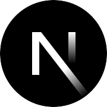
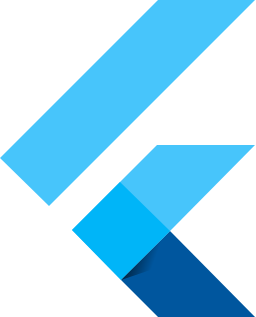

<!-- Reference section 07-examples (section). Styles: ../styles.css. Its words are the page's own; keep the structure, classes and assets. -->
<section id="examples" class="border-b border-border"><div class="section-container relative py-16 sm:py-18 md:py-24 flex flex-col gap-16 py-24!"><div class="flex flex-col gap-4 md:flex-row md:items-end md:justify-between"><h3 class="text-2xl md:text-4xl text-foreground-lighter max-w-xl">Kickstart your next project <br><span class="text-foreground">with production ready templates</span></h3><a href="/docs/guides/examples" class="text-sm text-foreground-light hover:text-foreground underline">View all examples</a></div><div><div class="grid grid-cols-1 md:grid-cols-2 gap-3"><a rel="noopener noreferrer" class="group flex flex-col bg-surface-75 border border-border rounded-lg overflow-hidden hover:bg-surface-100 transition-colors" href="#"><div class="px-6 py-5 flex flex-col gap-2.5"><div><h4 class="text-foreground text-sm font-medium">Stripe Subscriptions Starter</h4><p class="text-foreground-lighter text-sm mt-1 line-clamp-2">The all-in-one subscription starter kit for high-performance SaaS applications, powered by Stripe, Supabase, and Vercel.</p></div></div><div class="flex-1 flex items-center justify-center px-6 pt-4 pb-0 overflow-hidden"><div class="w-full rounded-t-lg border border-b-0 border-border-stronger/50 shadow-lg -mb-[10%] overflow-hidden"><div class="flex items-center gap-1.5 px-3 py-2.5 border-b border-border bg-background-200"><span class="size-2.5 rounded-full bg-foreground-muted/30"></span><span class="size-2.5 rounded-full bg-foreground-muted/30"></span><span class="size-2.5 rounded-full bg-foreground-muted/30"></span></div><div class="h-[240px] flex items-center justify-center bg-background"><div aria-label="Pricing page with subscription tiers" class="flex flex-col items-center justify-center gap-3 p-5 w-full"><div class="flex -mb-8"><div class="w-24 aspect-[9/16] border flex flex-col items-center"><div class="flex flex-col items-center justify-center gap-2 p-2"><div class="rounded bg-foreground-muted/10 w-8 h-2.5"></div><div class="rounded bg-foreground-muted/10 w-16 h-2.5"></div></div><div class="rounded bg-foreground-muted/10 w-20 aspect-square mt-4"></div></div><div class="w-24 aspect-[9/16] border flex flex-col items-center border-l-0 bg-[#635BFF]/5"><div class="flex flex-col items-center justify-center gap-2 p-2"><div class="rounded w-8 h-2.5 bg-purple-800"></div><div class="rounded w-16 h-2.5 bg-purple-900"></div></div><div class="rounded bg-foreground-muted/10 w-20 aspect-square mt-4 dark:bg-muted"></div></div><div class="w-24 aspect-[9/16] border flex flex-col items-center border-l-0"><div class="flex flex-col items-center justify-center gap-2 p-2"><div class="rounded bg-foreground-muted/10 w-8 h-2.5"></div><div class="rounded bg-foreground-muted/10 w-16 h-2.5"></div></div><div class="rounded bg-foreground-muted/10 w-20 aspect-square mt-4"></div></div></div></div></div></div></div></a><a rel="noopener noreferrer" class="group flex flex-col bg-surface-75 border border-border rounded-lg overflow-hidden hover:bg-surface-100 transition-colors" href="#"><div class="px-6 py-5 flex flex-col gap-2.5"><div><h4 class="text-foreground text-sm font-medium">Next.js Starter</h4><p class="text-foreground-lighter text-sm mt-1 line-clamp-2">A Next.js App Router template configured with cookie-based auth using Supabase, TypeScript and Tailwind CSS.</p></div></div><div class="flex-1 flex items-center justify-center px-6 pt-4 pb-0 overflow-hidden"><div class="w-full rounded-t-lg border border-b-0 border-border-stronger/50 shadow-lg -mb-[10%] overflow-hidden"><div class="flex items-center gap-1.5 px-3 py-2.5 border-b border-border bg-background-200"><span class="size-2.5 rounded-full bg-foreground-muted/30"></span><span class="size-2.5 rounded-full bg-foreground-muted/30"></span><span class="size-2.5 rounded-full bg-foreground-muted/30"></span></div><div class="h-[240px] flex items-center justify-center bg-background"><div aria-label="Dashboard with sidebar navigation and data grid" class="flex w-full h-full"><div class="w-24 border-r border-foreground-muted/10 flex flex-col gap-2 p-3 pt-3"><div class="h-3 w-3 rounded-sm bg-[#0070F3]"></div><div class="flex flex-col gap-1.5 mt-3"><div class="rounded h-2 w-full bg-muted"></div><div class="rounded bg-foreground-muted/10 h-2 w-14"></div><div class="rounded bg-foreground-muted/10 h-2 w-full"></div><div class="rounded bg-foreground-muted/10 h-2 w-10"></div></div></div><div class="flex-1 flex flex-col gap-2 p-3"><div class="rounded h-2.5 w-16 bg-muted"></div><div class="grid grid-cols-4 grid-rows-3 gap-1.5 flex-1"><div class="rounded-sm bg-foreground-muted/10 min-h-[40px]"></div><div class="rounded-sm min-h-[40px] bg-muted/70"></div><div class="rounded-sm bg-foreground-muted/10 min-h-[40px]"></div><div class="rounded-sm bg-foreground-muted/10 min-h-[40px]"></div><div class="rounded-sm bg-foreground-muted/10 min-h-[40px]"></div><div class="rounded-sm bg-foreground-muted/10 min-h-[40px]"></div><div class="rounded-sm min-h-[40px] bg-muted/70"></div><div class="rounded-sm bg-foreground-muted/10 min-h-[40px]"></div><div class="rounded-sm bg-foreground-muted/10 min-h-[40px]"></div><div class="rounded-sm min-h-[40px] bg-muted/70"></div><div class="rounded-sm bg-foreground-muted/10 min-h-[40px]"></div><div class="rounded-sm bg-foreground-muted/10 min-h-[40px]"></div></div></div></div></div></div></div></a></div><div class="grid grid-cols-1 sm:grid-cols-2 lg:grid-cols-4 gap-3 mt-3"><a rel="noopener noreferrer" class="group flex flex-col bg-surface-75 border border-border rounded-lg px-6 py-10 hover:bg-surface-100 transition-colors" href="#"><div class="flex items-center gap-2 mb-3"></div><h4 class="text-foreground text-sm font-medium">AI Chatbot</h4><p class="text-foreground-lighter text-sm mt-1 line-clamp-2">An open-source AI chatbot app template built with Next.js, the Vercel AI SDK, OpenAI, and Supabase.</p></a><a rel="noopener noreferrer" class="group flex flex-col bg-surface-75 border border-border rounded-lg px-6 py-10 hover:bg-surface-100 transition-colors" href="#"><div class="flex items-center gap-2 mb-3"></div><h4 class="text-foreground text-sm font-medium">LangChain + Next.js Starter</h4><p class="text-foreground-lighter text-sm mt-1 line-clamp-2">Starter template and example use-cases for LangChain projects in Next.js, including chat, agents, and retrieval.</p></a><a rel="noopener noreferrer" class="group flex flex-col bg-surface-75 border border-border rounded-lg px-6 py-10 hover:bg-surface-100 transition-colors" href="#"><div class="flex items-center gap-2 mb-3"></div><h4 class="text-foreground text-sm font-medium">Flutter User Management</h4><p class="text-foreground-lighter text-sm mt-1 line-clamp-2">Get started with Supabase and Flutter by building a user management app with auth, file storage, and database.</p></a><a rel="noopener noreferrer" class="group flex flex-col bg-surface-75 border border-border rounded-lg px-6 py-10 hover:bg-surface-100 transition-colors" href="#"><div class="flex items-center gap-2 mb-3"></div><h4 class="text-foreground text-sm font-medium">Expo React Native Starter</h4><p class="text-foreground-lighter text-sm mt-1 line-clamp-2">An extended version of create-t3-turbo implementing authentication on both the web and mobile applications.</p></a></div></div></div></section>
